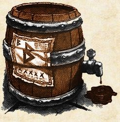

 Thorvaldr


La historia de Antares habla de la búsqueda, la pasión y la amistad. Un destino que siempre estuvo impreso, grabado en el alma de sus tres creadores: Mariana, Leo y Pablo.
El nombre Antares remite a la estrella más brillante de la constelación Escorpio la cual fue utilizada, durante siglos, por los navegantes de altamar para guiar sus destinos.
A principios de los ´90, Leo y Mariana, luego de recibirse, deciden armar sus valijas y recorrer otros caminos cuando por azar (o por una mágica estrella) recalan en Estados Unidos. Ya en Florida, no fueron ni el dorado sol ni el azul del Atlántico los responsables de algo que cambiaría sus vidas para siempre… Por las vueltas que da el mundo conocieron a Tim Patterson, un californiano quien en el balcón de su casa, fabricaba su propia cerveza. Tim no dudó en transmitirles sus conocimientos. Pablo, compañero de graduación de los chicos, por su lado y sin saber lo que pasaba, viajaba en las páginas de libros añejos y sabios; investigaba los métodos ancestrales para diseñar y construir equipos para elaborar cervezas artesanales.
No vamos a juzgar qué fue lo que los unió, pero lo cierto es que un día, en su Mar del Plata natal, los tres se reencuentran. Todos habían abrazado el hobby del homebrewing (fabricar su propia cerveza) y querían ir por más.
Así, llevados por la pasión y la amistad, a fines de la década del ´90, deciden abrir el primer Antares Brewpub, en un barrio típico de Mar del Plata.
Una propuesta única, que conjugaba un ambiente por demás acogedor, música de calidad y una deliciosa y original carta que acompañaba armoniosamente los primeros tres sabores de la cerveza artesanal.
El público de la ciudad, que desconocía ofertas similares, pronto lo transformó en un clásico.
La cálida respuesta recibida provocó que hoy, a quince años de aquel nacimiento, la pasión por la cerveza artesanal de Antares, se fuera extendiendo por el interior del país. Tandil, La Plata, Bariloche, Mendoza, Palermo, Necochea, Pinamar, Rosario, Cañitas, Ituzaingó, Córdoba y Quilmes- son por ahora los que disfrutan de este espacio.
Hoy Antares es la cerveza artesanal líder del país. No sólo abastece a sus locales propios y franquicias, sino que también posee una línea que se ofrece en bares y casas de delicatessen de diferentes ciudades. Pese al gran crecimiento, nunca abandonó el método artesanal de elaboración, que incluye un cuidado minucioso de la calidad del producto final, y un respeto por las ancestrales técnicas de fabricación.